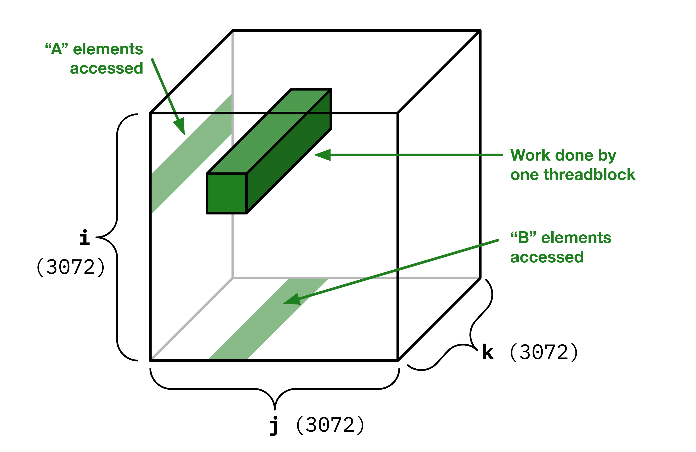
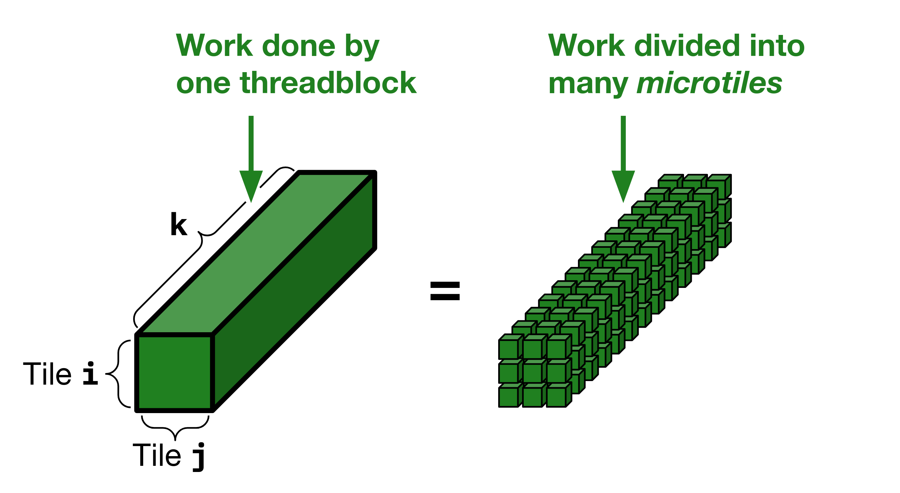

Lab 4: Matrix Multiply – Tiling and Reuse
Prologue: Logistics
Due Dates
For this lab, you’ll be turning in the following deliverables:
-
Checkpoint: Due Monday, September 30, 11:59pm (Gradescope)
-
Final Submission: Due Friday, October 4, 11:59pm (Gradescope)
See the “Deliverables” section at the end of this document for more information on what you’ll be turning in.
Note that because we pushed both the Lab 3 deadline and Lab 4 release back by one day relative to the usual schedule, the checkpoint for this week will be relatively relaxed.
Starter Code
You can get the starter code for this lab by cloning the lab repository:
Errata: L1 Cache Behavior (Link)
Since publishing this lab, we’ve seen evidence that some aspects of our description of the L1 cache may be inaccurate.
All the performance guidance in this lab continues to apply, in the sense that, if you follow that guidance, your code will run fast in the ways we’ve described.
However, it seems that NVIDIA’s L1 cache hardware may have capabilities beyond what we gave it credit for, and that some programming patterns which we warn against may in fact perform better than expected. For more information, see Errata: L1 Cache Behavior.
Viewing Assembly
Modern compilers are complicated beasts, and the best way to understand what they’re doing is often to manually inspect the instructions they emit. Starting with this lab, and going forward, we encourage you to start making a habit of looking at the generated assembly code for your kernels as part of your performance engineering workflow.
To view the assembly code for your GPU kernels, you can use Compiler Explorer (also known as “Godbolt,” after its creator Matt Godbolt). Compiler Explorer is an excellent free online tool which lets you view the assembly code for programs written in any of a huge variety of different languages, compiled with any of a huge selection of different compilers.
You can use the following Compiler Explorer link to interactively view the assembly for your CUDA programs:
>>> Compiler Explorer for CUDA <<<
(We’ve tried to configure this Compiler Explorer page to approximate the CUDA build environment we use on Telerun as closely as possible, but it’s possible there will be some discrepancies. We’re working on letting you also get assembly output directly from Telerun – stay tuned for that!)
Update 2024-10-01: Telerun now supports assembly output! Pull from the Telerun Git repo to update your client to the latest version.
Use the
--asmflag (shorthand-s) to save assembly output for your program:You can find the generated assembly code in
./telerun-out/<job_id>/.
In Compiler Explorer, you’ll find that the CUDA compiler actually generates two different kinds of assembly code for your kernels, which you can toggle between with a drop-down menu: “PTX,” and “SASS.” SASS corresponds to the actual machine code which the GPU executes, whereas PTX corresponds to a slightly higher-level representation of your program.1 Whenever a CUDA program is compiled and executed on a GPU, it is first compiled to PTX, and then that PTX is compiled to SASS.
The PTX/SASS distinction exists because NVIDIA wants to reserve the right to change the ISA they use in their hardware over time. As such, SASS is unstable across different generations of GPUs, essentially undocumented, and cannot be authored by hand (NVIDIA does not provide an official SASS-text-to-binary assembler). PTX, by contrast, is stable, thoroughly documented, and intended to be written by hand (when the need arises).
We won’t be going too in-depth on exactly how PTX and SASS work, but it’s often possible to guess roughly what a PTX or SASS instruction does based just on its name. For more information, you can refer to NVIDIA’s documentation here:
Introduction
Goals for This Lab
Modern GPUs are extremely flexible, but one of the things they’re best at – and best known for – is matrix multiplication. Among many other applications, matrix multiplication plays a central role in deep learning, where it serves as the fundamental computational primitive underlying training and inference for neural networks like large language models and diffusion image generators. As an example of the importance of this application, you may have seen in the news that Meta recently purchased 350000 NVIDIA H100 GPUs to “support their current and next generation AI models.” What that means in practice is that those 350000 GPUs will be spending most of their operational life multiplying matrices.
Over the course of the next several weeks, we’ll be learning how to implement a nearly state-of-the-art matrix multiplication kernel for NVIDIA GPUs. We’ll be building up our implementation piece-by-piece, with a new lab each week covering a new set of optimizations. By the end of this progression, we’ll be using advanced features of the GPU like tensor cores and asynchronous copies. For this first lab, though, we’ll only need the features of CUDA that we’ve already seen in Labs 1 - 3.
Concretely, in this lab we’ll be looking at three ideas:
-
The importance of data reuse in matrix multiplication.
-
How to exploit data reuse at the level of the L1 cache / shared memory.
-
How to exploit data reuse at the level of the register file.
Part 1: Analysis
The matrix multiplication workload we’ll be implementing can be described by the following sequential code:
# a: float array of size `size_i * size_k`
# b: float array of size `size_k * size_j`
# c: float array of size `size_i * size_j`
= 0
+= *
=
Because this matrix multiplication does not assume any special structure or sparsity in the input matrices, it’s an example of what’s sometimes called a “general matrix multiplication,” or “gemm.”
In future weeks, we’ll be varying the values of size_i, size_j, size_k, but for now we only care about two problem sizes:
-
A small-scale test case with
size_i = size_j = size_k = 256 -
A large-scale benchmark with
size_i = size_j = size_k = 3072
For the purposes of this lab, we don’t care about performance on the small-scale tests, only the large-scale benchmark. So for any performance analysis, you can assume every matrix is square with side length 3072.
Before we start writing code to implement this workload on the GPU, it will be useful to have the answers to a few questions in mind (see further below for relevant numbers you might find helpful for answering these):
Question 1 for final write-up: Walk through the following analysis in the context of the large-scale tests, with matrices of size
3072:
How many FLOPs are we computing in total? (Each
s += a[i, k] * b[k, j]is a single “fused multiply-add” (FMA), which is conventionally counted as two FLOPs.)If FLOPs were the only constraint, what is the fastest this workload could possibly run on our GPU? (Assume we’re using ordinary FMA instructions, not tensor cores.)
How many unique locations in DRAM are we accessing over the whole workload? (Assume the “A” and “B” matrices start in DRAM, and that our results in “C” must be written to DRAM.)
If we only needed to access each unique location in DRAM once, and if DRAM bandwidth were the only constraint, what is the fastest this workload could possibly run on our GPU?
How does (4) compare to (2)? Given a very well-optimized implementation, would you expect the run time of this workload to be dominated by compute or by data movement?
Alternatively, imagine we do not exploit reuse, so every
s += a[i, k] * b[k, j]operation loads thea[i, k]andb[k, j]elements directly from DRAM. Then how many total bytes would we need to load from DRAM?If we had no reuse, as in (6), and if DRAM bandwidth were the only constraint, what is the fastest this workload could possibly run on our GPU?
Imagine instead that every
s += a[i, k] * b[k, j]operation could somehow load directly from L2. Then if L2 bandwidth were the only constraint, what is the fastest this workload could possibly run?How do (7) and (8) compare to (2)?
Relevant Numbers: You may find the following hardware specs for our RTX A4000 GPU helpful in answering the questions above:
-
Total fused multiply-add (FMA) throughput:
(32 lanes / warp scheduler / cycle) * (2 FLOP / lane) * (4 warp schedulers / SM) * (48 SMs) * (1.56 GHz) = 19.2 TFLOP/sec -
Total DRAM bandwidth:
448 GB/sec -
Total L2 bandwidth:
1.5 TB/sec
Part 2: Reuse in L1
Our first implementation goal in this lab will be to write a matrix multiplication kernel which runs in under 80 ms on our large-scale benchmark.
If you’ve already figured out your answers for Question 1 in Part 1, you might notice something interesting about this 80 ms target: it is impossible to achieve if the operands for every FMA are loaded directly from L2 or DRAM. That means that we’re going to need to amortize the cost of loading data from L2 and DRAM, and load the operands for most of our FMAs from faster memory resources, such as the L1 SRAM on each SM.2 To do that, we’ll need to exploit data reuse!
Deliverable: In the file
matmul.cu, implement the functionsmatmul_l1andlaunch_matmul_l1so that they can process the large-scale benchmark in under 80 ms. To do this, your program will need to somehow make use of local SRAM resources.
Below, we give some suggestions on how you might achieve this performance target. (You may find it’s easier than you expect!)
Partitioning Strategies
There are many possible strategies for partitioning matrix multiplications across parallel processors, but we recommend you adopt a particularly popular and effective partitioning strategy called an “output-stationary dataflow”.
An output-stationary dataflow is one in which any given parallel worker in your program focuses on computing a single region of the output matrix C at a time, while iterating over multiple regions of the input matrices A and B. In the simplest form of output-stationary matrix multiplication on a GPU, every block in your kernel launch is responsible for fully computing the values of an independent subset of elements in the output matrix C – usually a square or rectangular tile. This will result in each block reading a rectangular strip of values from each of the A and B matrices.
It’s often useful to view the three-dimensional i, j, k iteration space of a matrix multiplication as a cuboid, with each of the three matrices A, B, C corresponding to a different plane: the A matrix being the i, k plane, the B matrix the k, j plane, and the C matrix the i, j plane. In such a representation, we can visualize our simple output-stationary dataflow as follows:

We recommend keeping the values of the in-progress C tile in registers for the duration of each block’s execution. Keeping the partial sum for each element of the C tile in registers allows you to very efficiently additively accumulate new values into it as you iterate over different parts of the A and B matrices.
If you hit any performance problems related to keeping your C tile values in registers, you may find it helpful to read ahead to the section “Using Registers Effectively” in Part 3.
Data Reuse Strategies
As we discussed in Lab 3, there are a few different ways a CUDA program can make use of the L1 SRAM on an SM:
-
As an explicit shared memory scratchpad.
This is how we accessed the L1 in Lab 3. You can declare a shared memory scratchpad withextern __shared__, and then arbitrarily write to it and read from it as you see fit. -
As a cache for read-only data.
This is more similar to how the L1 cache works on a CPU, in which the cache automatically saves the value at a given address on first access, and then automatically reuses that value on subsequent accesses until it is evicted. Because the L1 caches on the GPU are incoherent, the compiler will typically emit load instructions which bypass the L1 cache by default, and will only emit instructions that use the L1 cache under two circumstances:-
If the compiler can figure out that the memory location you’re reading won’t change from one access to the next. This is somewhat rare and unreliable, but it can happen!
-
If you manually tell the compiler that the memory location you’re reading won’t change from one access to the next. You can do this by using the special
__ldg(...)function.
-
You’re welcome to try using any of these methods to make use of the L1 in your matrix multiplication kernel. You may find it helpful to keep in mind that the capacity of the L1 is 128 KB per SM, of which at most 100 KB can be provisioned as shared memory.
If you hit any performance problems related to achieving data reuse in the L1 SRAM, you may want to read ahead to the section “Using L1 Effectively” in Part 3.
Questions
Once your matrix multiplication kernel is working, you can answer the following in your write-up:
Question 2 for final write-up: What run time were you able to achieve with this first matrix multiplication kernel? How did you choose your output tile size, and what factors do you think influence the optimal choice of tile size? How did you achieve reuse via the L1? If you used the L1 as shared memory, what was your strategy? If you used the L1 as a read-only cache, can you find evidence in your program’s PTX assembly that your program’s load instructions are indeed configured to use the cache?
Tip: In PTX assembly, a load from global memory which uses the L1 cache is written as ld.global.nc (the “nc” stands for “non-coherent”).
Part 3: Reuse in Registers
Analysis Revisited
To understand what we need to do to push our matmul implementation further, we can continue the analysis from Part 1 with one more thought experiment:
Question 3 for final write-up: Imagine that every load of
a[i, k]orb[k, j]could somehow load directly from L1. Then if L1 bandwidth were the only constraint, what is the fastest our workload could possibly run?
For reference, the aggregate L1 bandwidth across the whole machine is given by:
(32 lanes / SM / cycle)
* (4 bytes / lane)
* (48 SMs)
* (1.56 GHz)
= 9.6 TB/sec
Implementation
For our second and final kernel in this lab, we’ll be aiming for a much more ambitious run time target than in the previous section: 16 ms or less on our large-scale benchmark. If you’ve already answered Question 3, you might notice that in order to hit this 16 ms target, we’re going to need to load the operands for our FMAs from some memory resource which is faster than L1. But what’s faster than L1? There’s only one such resource: registers!
In the same way that in Part 2 we amortized the cost of loads from L2 and DRAM by reusing data in L1, in this kernel we’ll need to amortize the cost of loading from L1 by reusing data in registers.
Deliverable: In the file
matmul.cu, implement the functionsmatmul_l1_regandlaunch_matmul_l1_regso that they can process the large-scale benchmark in under 16 ms. To do this, your program will need to somehow reuse data at the level of the register file.
The strategy we recommend for implementing this kernel is to decompose the problem into microtiles, such that we can compute the FMAs associated with each microtile entirely using data stored (temporarily) in registers. Using our three-dimensional visualization of the i, j, k iteration space from earlier, such a microtile decomposition would look something like the following:

(Note that this diagram is not quite to scale – you’ll probably want to have more than 3 * 3 microtiles per block along the i and j dimensions!)
Below, we discuss a few performance considerations which you may want to keep in mind when writing your kernel.
Using Registers Effectively
To make effective use of the register file on the GPU, there are a few things it might be helpful to know:
-
The register file has a capacity of 64 KB per warp scheduler, or, equivalently, 256 KB per SM.
-
The compiler will try to put “stack variables,” like
int i;orfloat x[4][4];, in registers by default. However, there are three main things which can interfere with this process, in which case variables will “spill to local memory”:-
If your stack variables don’t all fit in the register file, some of them will spill.
-
If you access an array using a dynamic index, the array will spill. (E.g. writing
a[i]where the compiler cannot statically resolveito a constant.) -
If you take the address of a stack variable in such a way that the compiler can’t translate it to an equivalent form that doesn’t involve taking the address, the variable will spill. (E.g. writing
f(&x)wherefis an opaque function which is not inlined.)
-
-
Data which spills to local memory is cached in L1 and L2 when possible, but is ultimately backed by DRAM. If you try to allocate a sufficiently large amount of stack memory, eventually your kernel will end up needing to make round trips to DRAM to access its stack variables.
-
By default, the compiler chooses how many registers your kernel will use per warp. Sometimes, the compiler will choose to use so many registers per warp that it constrains the maximum number of warps per block, resulting in confusing errors when you try to launch your kernel with too many warps (even if you’re below the usual limit of 32 warps per block). To fix this, you need to use the special
__launch_bounds(...)__attribute in your kernel definition, which tells the compiler how many CUDA threads per block you intend to use when launching your kernel.
Using L1 Effectively
Both when accessing the L1 as a scratchpad and when accessing it as a cache, you should be aware that there are some constraints on the kinds of access patterns which the L1 SRAM can efficiently support:
-
Scratchpad Mode: Bank Conflicts.
When you’re accessing the L1 as a scratchpad, you can only make use of its full bandwidth if your code is free of so-called “bank conflicts.”
If we define a “word” to be 4 bytes, a bank conflict occurs when multiple lanes in a warp try to simultaneously access different locations in shared memory which map to the same word index mod 32. For example, if two lanes were to try to access words at byte-offsets
128and256in shared memory, then they would be trying to access word indices32and64. Both of those word indices map to word index0mod 32, so the two lanes would have a bank conflict.Bank conflicts matter because a word’s index mod 32 in shared memory determines the physical memory bank in which the word is stored. Each bank can only service one word-sized request per clock cycle, so if multiple lanes in a warp need to access the same bank, those lanes’ requests must be processed serially over multiple cycles.
Note that bank conflicts only apply when multiple lanes try to access different addresses mapping to the same bank. If multiple lanes try to access exactly the same addresses, there is no bank conflict, and no performance penalty.
-
Cache Mode: Cache Line Effects.
When you’re using the L1 as a read-only data cache, you can only make use of its full bandwidth if each warp accesses just a single contiguous 32-word cache line in each load instruction. (Reference)
When the L1 is acting as a cache, it can only perform a single tag lookup and serve data from a single cache line on each clock cycle. If different lanes in a warp try to simultaneously access data belonging to different cache lines, those lanes’ requests will be processed serially, and the total time taken will be proportional to the number of distinct cache lines touched.
You might notice that this means that using the L1 as an implicit cache is in an important sense less flexible than using the L1 as a shared memory scratchpad. When using the L1 as a scratchpad, we only need to ensure each load instruction is free from bank conflicts in order to use the L1’s full bandwidth. When using it as a cache, we need to ensure that each load is contiguous and 128-byte-aligned, which is a much stronger constraint.
Questions
Once you’ve implemented your optimized kernel, you can answer the final question of the lab:
Question 4 for final write-up: What run time were you able to achieve by exploiting register-level reuse? How did you choose to partition work across CUDA threads and across time? Was your partitioning strategy affected at all by considerations related to bank conflicts or cache line effects? Were there any numerical parameters you needed to tune, and if so, how did you choose their values? When you inspect the generated SASS assembly for your kernel, do you see evidence of register-level reuse? Finally, optionally – do you have any ideas for how we might be able to optimize this kernel further in the next few labs?
Deliverables
Checkpoint (Due Monday, September 30, 11:59pm)
Because this lab was released a day later than usual, we’re not requiring you to do much for the checkpoint to get full credit. Ideally, we’d like you to try answering Question 1 in Part 1 (“Analysis”), and see how far you can get on the code for Parts 2 and 3.
On the Gradescope assignment for “Lab 4 Checkpoint,” (link) submit your answers to the prompts checking in about how you’re doing with the lab.
Final Submission (Due Friday, October 4, 11:59pm)
On the Gradescope assignment “Lab 4 Final,” (link) submit your completed code for matmul.cu, as well as a PDF write-up containing your answers to Questions 1 - 4.
If you’re familiar with LLVM IR, you can think of PTX as operating at approximately the same level of abstraction. In particular, PTX represents programs in terms of instructions operating on an unbounded set of virtual registers, rather than a finite set of architectural registers. Register allocation is handled in the PTX-to-SASS compilation step.
We’ll use the term “L1” generically to refer to the physical SRAM resource on each SM, which can be used as either an explicitly-addressed shared memory or as an automatically-managed L1 cache.